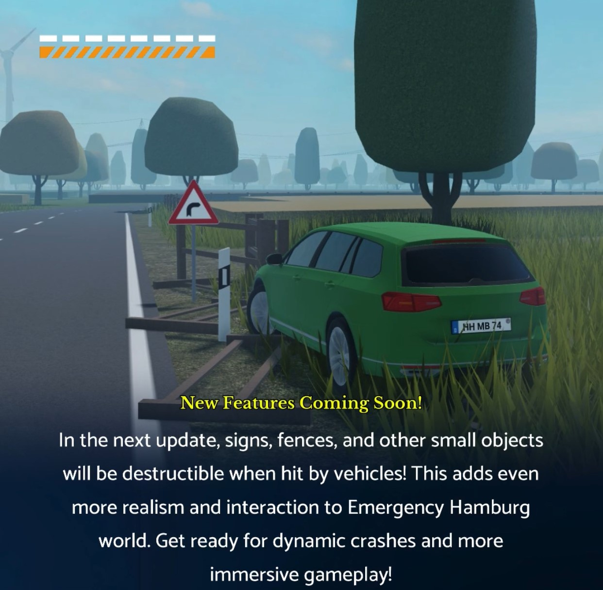
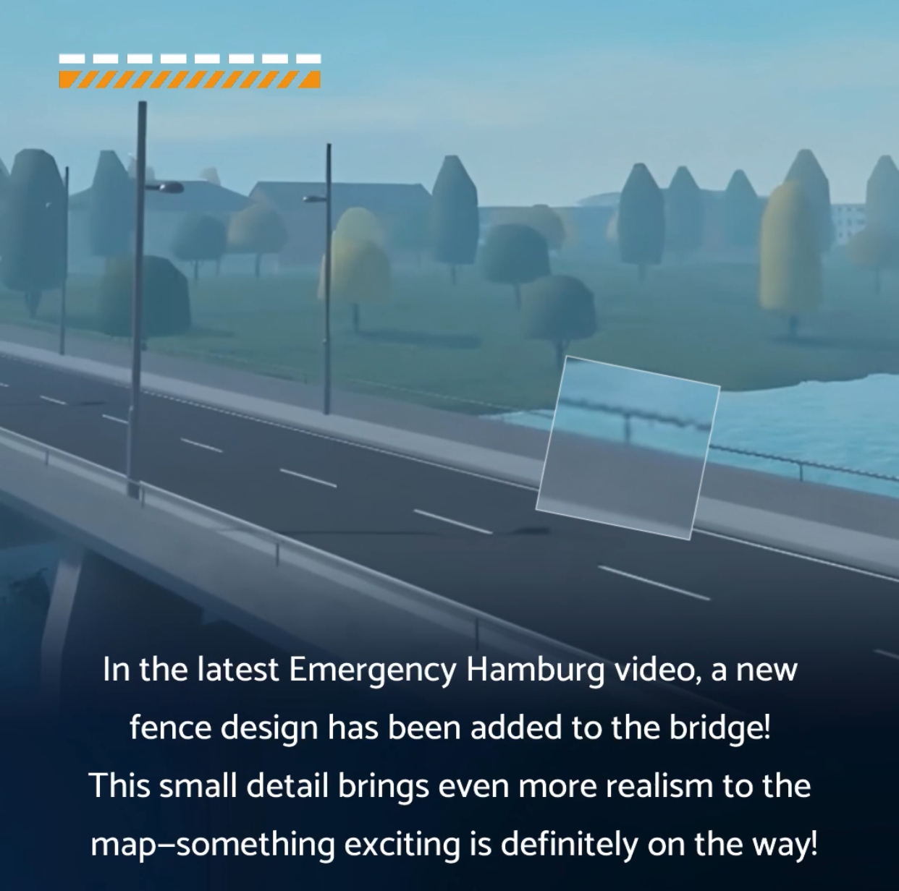

Improved Fence & Object Interaction
Object and Fence Collision: Another major feature in v3.10 is the ability for vehicles to collide with fences and other objects in the environment. This interaction makes the game world feel more dynamic and realistic, as players can now break through barriers or use them to their advantage during pursuits.
New Environmental Obstacles: Fences and other small structures will now have a more prominent role in how vehicles interact with the environment, allowing players to cause destruction or navigate through obstacles more creatively.

